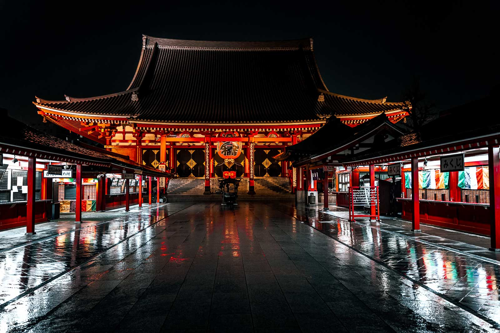

Placeholder intro paragraph — set the scene for the trip in a sentence or two. Where you went, how you moved between places, what the light was doing while you were there.
Placeholder secondary paragraph — the honest framing. What this page will cover, and the tone you want it to strike. Replace this copy once the trip is ready to write up.
Itinerary
Place 1 · X days
Placeholder paragraph one — a short introduction to the first stop on the itinerary. Describe what makes this place worth the days you spent there, how you got in, what the light was doing, what you noticed first.
Placeholder paragraph two — the honest part. What surprised you, what you'd do differently, what a realistic day here actually costs. Rough numbers, quiet observations, the details a guidebook skips.
Itinerary
Place 2 · X days
Placeholder paragraph one — set the scene for the second leg. How you moved between here and the first stop, what shifted (the pace, the geography, the food), what you were hoping to find.
Placeholder paragraph two — practical notes. Where you slept, roughly what it cost, whether the popular thing was worth the queue. Save the reader some time by being specific.

Itinerary
Place 3 · X days
Placeholder paragraph one — the final stretch. Whether this was the highlight or the wind-down, and why. What the mood of the trip had become by this point.
Placeholder paragraph two — the honest sign-off. Would you come back, and if so what would you do differently. What this leg actually cost and whether it earned the time.